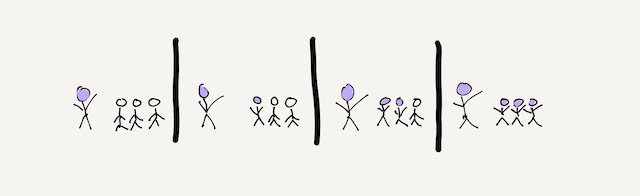

Back to table of contents

Teaching requires practice and feedback, just like any other skill.
Practicing teaching
Amy J. Ko, Ph.D.
You can't learn how to teach from a book.
But you can learn how to learn how to teach from a book.
Here are some of the key ideas that should anchor your practice as an Informatics teacher:
-
Students' lives are just as complicated as yours, often more so.
Because of this, students often lack the resources necessary to meet your learning expectations.
Remember this, design for this, and problem solve around this.
-
Informatics aims to educate lifelong critics, designers, and developers of information technologies that make the world a better place.
Teach enough skills to help students secure their first job or get into graduate school, but also teach towards their whole life and career, positioning them to make social change through information.
-
The academic freedom that UW bestows upon you is a blessing and a curse.
It gives you the freedom to experiment and leverage your expertise, but that places a lot of responsibility on you to envision your course and to be compliant with law.
It also requires you to coordinate with our faculty to ensure some degree of consistency between classes.
-
Learning is more complicated than you think.
It requires prior knowledge, attention, motivation, interest, identity, practice, and feedback.
When students lack these things, they don't learn.
Get good at identifying what resources students are bringing.
-
A teacher's primary job is to structure an environment that provides the resources necessary to learn.
Students are responsible for exploiting that environment, and you're responsible for adjusting it if it's not working.
Remember this division of labor and design around it.
If you don't, you'll erode the trust at the foundation of your authority, which prevents you from teaching.
-
Designing a good course requires clearly communicating the learning environment you've designed and setting clear expectations about how to engage in that environment.
If you're not prepared, you can’t communicate these things clearly.
-
Use formative assessments to measure learning and diagnose misconceptions.
Summative assessments are best after learning has occurred, where the threat of a permanent outcome to a grade can do the least damage to motivation, interest, and identity.
-
All courses, no matter how well designed and planned, lead to conflict.
Manage it by listening, and finding compromises that share in blame for misunderstandings about expectations.
How can you put these into practice?
Reflect.
Reflect on your teaching; keep a diary about what's going well and what's not.
Reflect on your teaching with other teachers in the Information School; seek advice and problem solve.
And as you reflect, be vulnerable and open to feedback, so that you can improve.
Teaching, as with any skill that requires deliberate practice, relies on regular and targeted feedback.
The faculty and students in our school are here to provide it.
Good luck with your teaching!
Table of contents